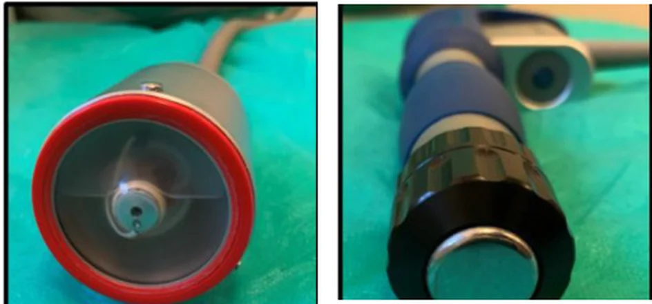

Le onde d'urto sono impulsi acustici che attraversano la pelle e raggiungono il tendine, la fascia o l'osso. Non si usano aghi, non serve anestesia e al termine della seduta si cammina normalmente.
Sono efficaci in alcune condizioni e poco in altre. Qui sotto trovi per quali, come si svolge una seduta e che cosa aspettarti.

Per quali problemi si usano
Dolore al tallone (fascite plantare)
È l'indicazione sostenuta dalle prove più solide: il miglioramento di dolore e funzione è ampio e si mantiene nel tempo.[2][3]
Un'aspettativa diffusa va però ridimensionata. Il vantaggio è dimostrato rispetto al non fare nulla, non rispetto alle altre terapie fisiche: nel confronto diretto con il laser ad alta potenza non emergono differenze.[4] Le onde d'urto trovano spazio soprattutto quando il trattamento di base — esercizi, carico graduale, calzature adeguate — non è stato sufficiente.
Spalla con calcificazione
Migliorano dolore e funzione, e in una parte dei casi la calcificazione si riassorbe completamente. L'energia alta è più efficace di quella bassa, mentre fra onde focali e radiali non emergono differenze.[5]
Nei primi mesi il lavaggio ecoguidato della calcificazione dà risultati equivalenti, mentre a distanza di un anno controlla il dolore un po' meglio.[5] Quando il deposito è raggiungibile con l'ago, è l'alternativa da valutare, e richiede una seduta sola invece di un ciclo.
Gomito del tennista
I risultati sono discordanti e non consentono una conclusione netta.[6] Nell'epicondilite cronica le onde d'urto possono affiancare la fisioterapia, non sostituirla.
Dolore sul lato dell'anca
Riducono il dolore nei mesi successivi al ciclo, mentre il recupero della funzione è modesto.[7] Nella sindrome dolorosa del gran trocantere rappresentano un'alternativa all'infiltrazione di cortisone. Le onde focali risultano più efficaci di quelle radiali.
Tendine d'Achille
Nella tendinopatia achillea le onde d'urto non hanno mostrato un beneficio apprezzabile, né nella forma inserzionale né in quella del corpo del tendine.[8][9] Non sono quindi un trattamento di prima scelta: il programma di esercizio graduale resta la cura con i risultati migliori.
Tendine rotuleo
Anche nella tendinopatia rotulea il trattamento efficace è l'esercizio.[3] Le onde d'urto possono accompagnarlo, non prenderne il posto.
Le altre indicazioni
Sono state impiegate anche nei ritardi di consolidazione di una frattura, nell'osteonecrosi, nell'edema osseo e in alcune compressioni nervose. In queste condizioni l'esperienza disponibile è ancora limitata, e l'indicazione va posta caso per caso.[1]
Com'è la seduta
La seduta si svolge da seduti o sdraiati. Il medico individua il punto da trattare, spesso con l'ecografo, e appoggia il manipolo sulla pelle con un gel di contatto. Non serve spogliarsi se non per scoprire la zona, non occorre alcuna preparazione e non è previsto alcun periodo di riposo dopo.
Il trattamento dura pochi minuti. In genere si eseguono tre sedute, a una settimana di distanza l'una dall'altra.[1]
Durante gli impulsi si avverte un fastidio: è previsto, e l'intensità viene regolata sulla tolleranza di chi la riceve. Per questa ragione non si esegue l'anestesia locale, che eliminerebbe il riferimento del dolore e riduce l'efficacia del trattamento.[1]
Dopo la seduta, fai
- Riprendi a camminare e a muoverti normalmente.
- Prosegui gli esercizi assegnati: nelle tendinopatie sono la parte principale del trattamento.
- Metti in conto un paio di giorni di indolenzimento nella zona trattata.
- Fissa il controllo a distanza di mesi, non di giorni.
Non fare
- Non tornare allo sforzo massimo nelle ventiquattro ore successive.
- Non valutare il risultato il giorno dopo l'ultima seduta.
- Non ripetere subito un secondo ciclo se il primo non ha dato esito, senza prima riconsiderare la diagnosi.
Quando si vedono i risultati
Il beneficio compare in genere a distanza di settimane dalla fine del ciclo, non durante. Il risultato va quindi valutato non prima di quattro mesi.[1]
È un punto pratico che conta: giudicare nei giorni immediatamente successivi all'ultima seduta porta a conclusioni sbagliate in entrambe le direzioni.
Quando non si fanno
- Terapia anticoagulante in corso o disturbi della coagulazione.
- Infezione in atto nella zona da trattare.
- Gravidanza.
- Tumore nella zona da trattare: metastasi, mieloma, linfoma, tessuto tumorale.
- Direttamente sulla cartilagine di accrescimento, nei ragazzi che non hanno completato la crescita.
- Rottura completa del tendine.
Si evitano inoltre i grossi nervi e i vasi principali. Prima di trattare un tendine già sofferente, soprattutto dopo i sessant'anni, è opportuna un'ecografia o una risonanza: la presenza di una rottura parziale estesa cambia la decisione.[1]
Effetti indesiderati
I disturbi minori sono frequenti e di regola si risolvono in uno o due giorni: dolore durante gli impulsi, arrossamento della pelle, indolenzimento nelle ore successive, piccoli lividi o puntini emorragici, formicolii, gonfiore. Sono più probabili con le intensità elevate, e una dose eccessiva oltre ad aumentarli riduce l'efficacia del trattamento.[1]
Le complicanze rilevanti sono rare.[10] Sono state descritte, in casi isolati, rotture tendinee dopo trattamento del tendine d'Achille con onde focali: una ragione in più per riservare il trattamento alle situazioni in cui esiste un'indicazione chiara.[8]
La sicurezza a lungo termine non è stata studiata.
Cosa è utile sapere prima
Non esiste un protocollo unico. Numero di impulsi, energia e intervallo fra le sedute variano da centro a centro: due cicli eseguiti in luoghi diversi non sono necessariamente confrontabili.[1]
Non è possibile prevedere chi risponderà. L'indicazione si pone sulla diagnosi e sul percorso già fatto; l'esito si valuta a distanza.
L'effetto non è meccanico ma biologico. La sollecitazione stimola una risposta dei tessuti che riguarda vascolarizzazione, riparazione e percezione del dolore.[1]
Da dove vengono queste informazioni
- De la Corte-Rodríguez H, Román-Belmonte JM, Rodríguez-Damiani BA, Vázquez-Sasot A, Rodríguez-Merchán EC. Extracorporeal shock wave therapy for the treatment of musculoskeletal pain: a narrative review. Healthcare 2023;11(21):2830. doi:10.3390/healthcare11212830
- Zhao P, He Y, Li M, Wang J, Wang R, Cui X. Comparative efficacy and acceptability of different intensity levels of extracorporeal shock wave therapy in adults with plantar heel pain: a systematic review and network meta-analysis. PM&R 2025;17(12):1481–1493. doi:10.1002/pmrj.13417
- Charles R, Fang L, Zhu R, Wang J. The effectiveness of shockwave therapy on patellar tendinopathy, Achilles tendinopathy, and plantar fasciitis: a systematic review and meta-analysis. Frontiers in Immunology 2023;14:1193835. doi:10.3389/fimmu.2023.1193835
- Guede-Rojas F, Rodriguez-Lagos L, Carvajal-Parodi C. Effectiveness of radial extracorporeal shockwave therapy versus other electrophysical modalities on pain and functionality in patients with plantar fasciitis: a systematic review and meta-analysis. Foot & Ankle Specialist 2026. doi:10.1177/19386400261449323
- Brindisino F, Marruganti S, Lorusso D, Cavaggion C, Ristori D. The effectiveness of extracorporeal shock wave therapy for rotator cuff calcific tendinopathy: a systematic review with meta-analysis. Physiotherapy Research International 2024;29(3):e2106. doi:10.1002/pri.2106
- Verbeke A, Vanwalleghem E. Extracorporeal shock wave therapy in chronic lateral elbow tendinopathy: a systematic review. Orthopaedic Journal of Sports Medicine 2026;14(4):23259671261420423. doi:10.1177/23259671261420423
- Rhim HC, Shin J, Beling A, et al. Extracorporeal shockwave therapy for greater trochanteric pain syndrome: a systematic review with meta-analysis of randomized clinical trials. JBJS Reviews 2024;12(8). doi:10.2106/JBJS.RVW.24.00091
- Korakakis V, Kotsifaki R, Sotiralis Y, Malliaras P. Shockwave therapy for midportion and insertional Achilles tendinopathy: a nail in the coffin? A systematic review with meta-analysis. Journal of Orthopaedic & Sports Physical Therapy 2026;56(5):282–299. doi:10.2519/jospt.2026.13985
- Ni T, Zhao Y, Pang L, Fu W. Extracorporeal shockwave therapy versus sham extracorporeal shockwave therapy for chronic Achilles tendinopathy: a meta-analysis of randomized controlled trials. PeerJ 2026;14:e20506. doi:10.7717/peerj.20506
- Roerdink RL, Dietvorst M, van der Zwaard B, van der Worp H, Zwerver J. Complications of extracorporeal shockwave therapy in plantar fasciitis: systematic review. International Journal of Surgery 2017;46:133–145. doi:10.1016/j.ijsu.2017.08.587
Scheda aggiornata il 16 novembre 2026. Prossima revisione prevista entro novembre 2028.